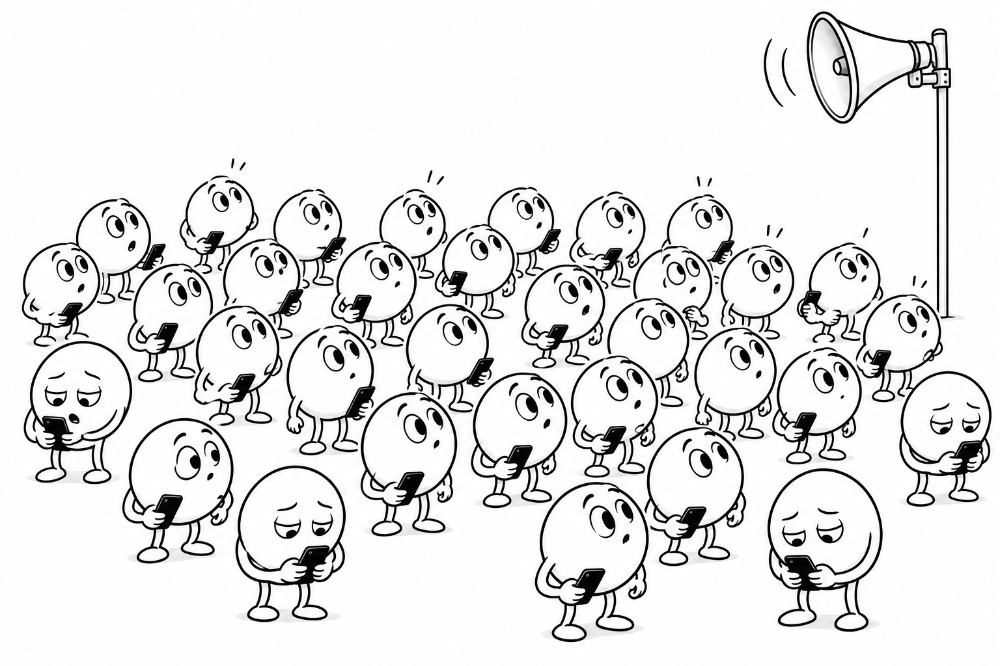

Illustrative numbers · exact calculationsScroll to unfold. Scroll back to revisit.
A visual lesson
Attention
How tokens share
information.
A token has its own representation.
Attention lets it read from the others.

Tokens as rows. Attention from the left.
Keep the two operations in view
Choose where to read.
Choose what to carry.
Queries and keys determine a distribution over source positions. Values determine the information those positions contribute. The output at each destination is a weighted sum of the source values.
Notation for this lesson
Tokens are rows of . Query and key maps have shape ; the value map has shape . Thus and . The optional output map is . A subscripted token vector denotes a row throughout.
We start with chosen weights and values equal to the input, so the operation is exactly . We then calculate attention weights from fixed illustrative query and key maps and introduce a value map. These numbers demonstrate the mechanism; they are not learned linguistic relationships. We omit bias terms. Input representations may already include position information; storing tokens in ordered rows does not itself encode position.
Sources and conventions
Nelson Elhage and colleagues (2021), A Mathematical Framework for Transformer Circuits, especially “Attention Heads as Information Movement,” the QK/OV decomposition, and the tensor-product appendix. The distinction between moving information across positions and transforming it within each position motivates this lesson.
Simon J. D. Prince (2023), Understanding Deep Learning, chapter 12, §§12.2–12.3, equations 12.6–12.9. Prince stores tokens as columns. We transpose the convention: projection matrices multiply from the right, attention multiplies from the left, and softmax normalizes each row. The paper’s per-token maps likewise transpose when translated into this convention.
The QK and OV products in our row convention
Writing gives scores . Including the output map gives and a head contribution . These product orders differ from the column-vector definitions in the Transformer Circuits paper; they express the same operations after transposition.
Several heads can perform different mixtures in parallel. With their output maps included, their contributions add: . Each head follows the mechanism shown here.
The illustrative projection matrices
The four input rows appear in the first scene. The query, key, and value maps used in all subsequent calculations are:
For example, the row for “thanked” is , giving and . These maps are chosen to make the arithmetic visible.